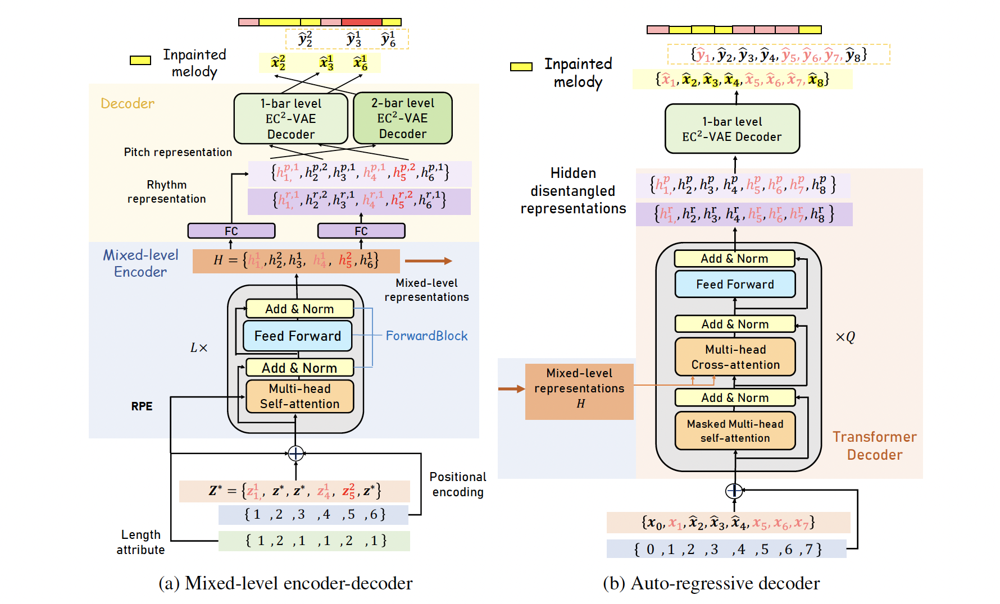

Here, you will find demos of our paper.
Our model consists of two components: 1) a mixed-level encoder-decoder module to learn mixed-level represenation and 2) an auto-regressive decoder to inpaint missing notes using mixed-level representations. 
In our paper,we elaborate on how the proposed model inpaints:
-
Variable-position inpainting.
-
Variable-length inpainting.
-
Irregularly-corrupted context attending.
-
Mixed-level representation sampling.
-
Controllable generation in number of notes in one measure.
We show some demos in the inference section.
1. Variable-position inpainting
An example of a 16-bar melody missing 1-4th, 5-8th, 9-12th or 13-16th bars.
Missing 1-4th bars.
Missing 5-8thth bars.
Missing 9-12th bars.
Missing 12-16th bars.
2. Variable-length inpainting
Examples show that the proposed model infills missing spans with different numbers of bars.
Case 1
Inpaint 2 bars.
Our proposed model.
Baseline 1.
Baseline 2.
Our proposed model without contrastive loss.
Inpaint 4 bars.
Our proposed model.
Baseline 1.
Baseline 2.
Our proposed model without contrastive loss.
Case 2
Inpaint 2 bars.
Our proposed model.
Baseline 1.
Baseline 2.
Our proposed model without contrastive loss.
Inpaint 4 bars.
Our proposed model.
Baseline 1.
Baseline 2.
Our proposed model without contrastive loss.
3.Irregularly-corrupted context attending
The model attends tomasked contexts and infills missing segments.
Total 10 bars.
Total 12 bars.
Below, we show the music score shown in our paper.
Diversified generation
4. Mixed-level representation sampling
Our model generate diversified versions of 'Danny Boy' under mixed-level sampling.
Version 1.
Version 2.
Version 3.
Version 4
Version 5:
3. Synthesis as Style Transfer Onto Harmonics
Here is the melody from the folk song, ‘Scarborough Fair’, as played by a sinewave generator. These sinewaves include the fundamental as well as the first few harmonics, in order to provide structure for cGAN to translate.
Here is the same harmonic track, with the violin ‘style’ applied:
Finally, we leave the reader with the first 7 notes of the chorus of Rick Astley’s “Never Gonna Give You Up”, as played by a sinewave generator.
Here is the result of our method, applying violin stylisation :)